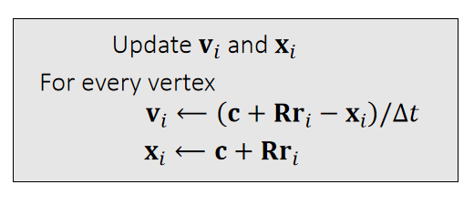
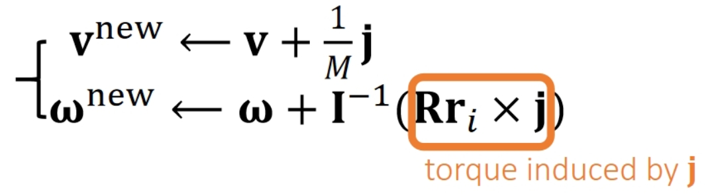

P24
碰撞检测
让刚体上的每个顶点与SDF做一次碰撞检测，检测方法与粒子+SDF相同。
区别在每个顶点当前的位置与速度的获取当法与粒子不同。

以Vertex i为例，先分析i当前的位置和速度:

✅ \(x\)和\(v\)分别是刚体质心点的位置和速度,第二项为刚体上的特定点相对于质心点的位置和速度
碰撞响应
SDF 常用于代表静态物体，这种物体不响应力和碰撞，所以所有的碰撞响应都发生在粒子上。
Problem: we cannot directly modify \(\mathbf{x}_i\) or \(\mathbf{v}_i\) since they not state variables. They areindirectly determined.
对于粒子，可以直接用Impulse修改\(x\)和\(v\)
对于刚体，impulse只能修改\(x\)和\(v\)，不能修改\(x_i\)和\(v_i\)；其中\(x\)可以通过直接修改更新，也可以通过修改\(v\)来更新，这里选择后者。
解决方法：通过修改\(\mathbf{v}\)和\(\mathbf{\omega}\)实现修改\(x_i\)和\(v_i\)
相交解除
P32
Shape Matching
✅ 用粒子的方法来解决刚体的问题
P33
Basic Idea
We allow each vertex to have its own velocity, so it can move by itself.

First, move vertices independently by its velocity, with collision and friction being handled.
Second, enforce the rigidity constraint to become a rigid body again.
先对 Mesh 上的每个顶点看作是粒子对它们进行独立的仿真。保证仿真后每个粒子(顶点)不与 SDF 发生相交。
此时刚体可能发生了形变，再更新刚体的位置和旋转，使其各个顶点尽量接近第一步的仿真结果。
✅ 第二步是 Shape Matching 的关键
Rigidity：包含更新质心的位置和旋转
P34
更新质心位置
Now \(\mathbf{c}\) and \(\mathbf{R}\) are unknowns we want to find out from:

✅ \(\mathbf{c}\) 代表质心，即前面的 \(\mathbf{x}\)
✅ 约束1：新的顶点位置与原顶点位置的距离尽量接近。
✅ 约束2：\(\mathbf{R}\) 是旋转矩阵。
✅ 很难通过定义目标函数来满足约束2，因此问题简化：用任意矩阵A代替需要满足旋转矩阵约束的\(R\)。
✅ \(\sum Ar_i = A \sum r_i = 0\)，因此得出结论：约束前后质心位置不变
❓ 优化之后的刚体可能还是与地面穿透的。
P35
更新质心旋转

✅ 先假设 \(\mathbf{R}\) 是任意矩阵 \(\mathbf{A}\),再从中提取旋转成分
✅ Polar Decomposition：极性分解，把任意矩阵分解旋转部分和形变部分。
P36
结论：
\(A^TA=S^TS=S^2\)
\(R=AS^{-1}\)
P39
Shape Matching Pipeline



Physical quantities are attached to each vertex, not to the entire body.
P40
算法分析
-
优点：Easy to implement and compatible with other nodal systems, i.e., cloth, soft bodies and even particle fluids.
-
局限性：Difficult to strictly enforce friction and other goals. The rigidification process will destroy them.
-
适用场景：More suitable when the friction accuracy is unimportant, i.e., buttons on clothes.
P41
After-Class Reading
Muller et al. 2005.
Meshless Deformations Based on Shape Matching. TOG (SIGGRAPH).
状态更新
冲量法
碰撞 → 粒子响应 → 粒子速度 → 刚体冲量 → 刚体状态
P25
反向思考
What happens to \(\mathbf{v}_i\) when an impulse \(\mathbf{j}\) is appliedat vertex \(i\)?
✅ \(\mathbf{j}\) 是一个未知的冲量。\(\mathbf{v}_i\) 是点速度、\(\mathbf{v}\)是线速度
✅ 假设：此时对\(x_i\)点施加冲量\(j\)，会发生什么？
冲量\(\mathbf{j}\)对刚体的影响
根据刚体动力学可得：

✅ 冲量 = \(Ft\) = \(m\Delta v \Rightarrow \Delta v\) = 冲量/\(m\)，由此得到\(v^{new}\)
✅ 冲量力矩=质量矩阵 * \( \Delta \omega \) = 力矩 \(·t\), 由力矩=\(Rr_i \times f_i\)，可得： \(Rr_i \times j\) = 冲量力矩 \(\Rightarrow \Delta \omega\) ＝ 质量矩阵\(^{-1}\) · 冲量力矩 ，由此得到\(\omega^{new}\)
冲量\(\mathbf{j}\)对刚体顶点\(\mathbf{i}\)的影响
由线速度\(v^{new}\)得到点速度\(\mathbf{v}_i^{new}\)

P27
$$ \mathbf{v_i^{new}} = \mathbf{v} _i+\frac{1}{M}\mathbf{j} −(\mathbf{Rr} _i)×(\mathbf{I} ^{−1}(\mathbf{Rr} _\mathbf{i}\times \mathbf{j} )) $$
✅ 向量之间的点乘可以转化为矩阵与向量的乘法，方便化简。具体内容见页面最后的补充1
$$ \mathbf{v_i^{new}} = \mathbf{v} _i+\frac{1}{M} \mathbf{j} −(\mathbf{Rr} _i)^∗\mathbf{I} ^{−1} (\mathbf{Rr} _i)^∗\mathbf{j} $$
化简得：
$$ \mathbf{v_i^{new}}-\mathbf{v}_i=\mathbf{Kj} $$ $$ \mathbf{K} \longleftarrow \frac{1}{M} \mathbf{1} −(\mathbf{Rr} _i)^{∗}\mathbf{I} ^{−1}(\mathbf{Rr} _i)^{∗} $$
✅ 结论，当碰撞点\(i\)确定时，冲量\(j\)和其造成的速度改变量\(Δv\)是确定的，这样，可以通过施加\(j\)，精确修改\(v_i\)
✅ 已知 \(\mathbf{v}_i^{new},\mathbf{v}_i,\mathbf{K}\),可求得 \(\mathbf{j}\)
P28
Pipeline

✅ \(i\)点发生碰撞 → 算出i点碰撞后的速度 → 算出给i点什么样的冲量能让\(i\)出现碰撞后的效果 → 真的施加这样一个冲量 → 更新刚体状态
✅ 此处假设不合理。这里假设刚体上每个顶点被撞后的响应效果是确定的，即与刚体被撞击的位置及刚体自身状态无关，但又由于刚体自身状态等原因，为了达到目标效果，碰撞所产生的冲量却是不一样的。
✅ 事实上，正确逻辑应该，碰撞所生的冲量是确定的。而由于刚体自身状态等原因，对刚体顶点产生的效果是不同的。
P29
Some Implementation Details
- We can decrease the restitution \(\mathbf{\mu_N} \) to reduce oscillation（抖动）.
✅ 抖动原因：重力让它往下，冲量让它往上，导致在地面上反复振荡
✅ 解决方法：接近静止时衰减 \(\mathbf{\mu_N} \)
- We don't update the position here. Why?
- Because the problem is nonlinear.
- We will come back to this later when we talk about constraints.
P30
多碰撞点场景
✅ 如果有多个顶点发生碰撞呢？
答：方法1，问题简化，用平均值。方法2，解线性系统。

Relative velocity at joints
$$ \begin{cases} \mathbf{v} _0 ^{\mathbf{new} }− \mathbf{v} _0=\mathbf{K} _{a00 }\mathbf{j} _0+\mathbf{K} _{a01 }\mathbf{j} _1 −(−\mathbf{K} _{b00 }\mathbf{j} _0 +\mathbf{K} _{b02}\mathbf{j} _2 )\\ \mathbf{v} _1 ^{\mathbf{new} }− \mathbf{v} _1=\mathbf{K} _{a10 }\mathbf{j} _0+\mathbf{K} _{a11 }\mathbf{j} _1 −(−\mathbf{K} _{c11 }\mathbf{j} _0 +\mathbf{K} _{c13 }\mathbf{j} _3 )\\ \mathbf{v} _2 ^{\mathbf{new} }− \mathbf{v} _2=\mathbf{K} _{b20 }\mathbf{j} _0+\mathbf{K} _{b22 }\mathbf{j} _2\\ \mathbf{v} _3 ^{\mathbf{new} }− \mathbf{v} _3=\mathbf{K} _{c31 }\mathbf{j} _1+\mathbf{K} _{c33 }\mathbf{j} _3 \end{cases} $$
$$ \Downarrow $$
$$ \begin{bmatrix} \mathbf{K} _{a00 }+\mathbf{K} _{b00 } & \mathbf{K} _{a01 } & -\mathbf{K} _{b02 } & \Box \\ \mathbf{K} _{a10 } & \mathbf{K} _{a11 }+\mathbf{K} _{c11 } & \Box & -\mathbf{K} _{c13 }\\ -\mathbf{K} _{b20 } & \Box & \mathbf{K} _{b22} & \Box \\ \Box & -\mathbf{K} _{c31 } & \Box & \mathbf{K} _{c33 } \end{bmatrix}\begin{bmatrix} \mathbf{j} _{0 }\\ \mathbf{j} _{1}\\ \mathbf{j} _{2}\\ \mathbf{j} _{3} \end{bmatrix}=\begin{bmatrix} \bigtriangleup \mathbf{v} _{0}\\ \bigtriangleup \mathbf{v} _{1}\\ \bigtriangleup \mathbf{v} _{2}\\ \bigtriangleup \mathbf{v} _{3} \end{bmatrix} $$
\(\mathbf{K} _{a01}\mathbf{j} _1\) stands for the velocity change of bunny \(a\) at joint 0, caused by impulse \(\mathbf{j}_1\).
P31
After-Class Reading (Before Collision)
https://graphics.pixar.com/pbm2001
Rigid Body Dynamics
本文出自CaterpillarStudyGroup，转载请注明出处。
https://caterpillarstudygroup.github.io/GAMES103_mdbook/